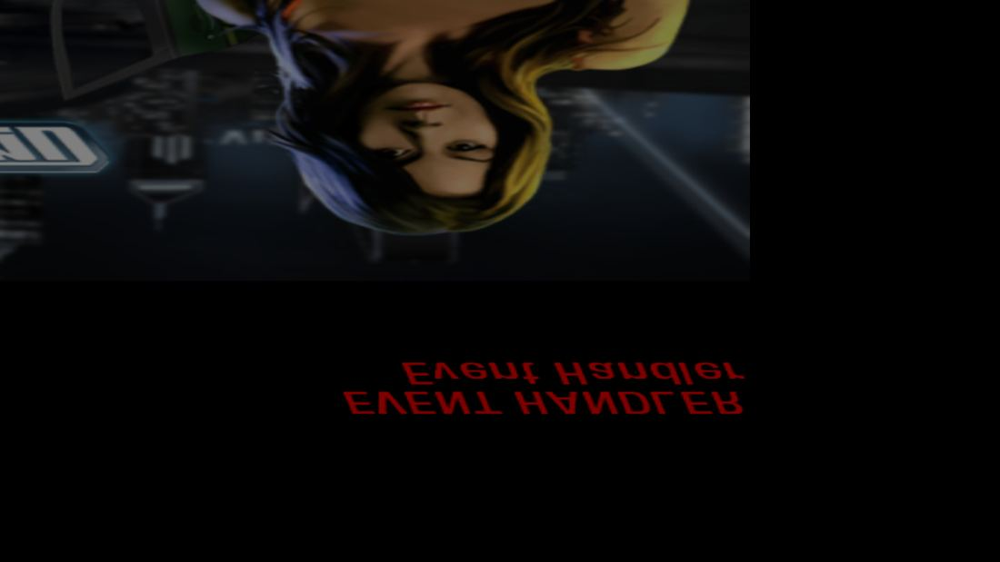
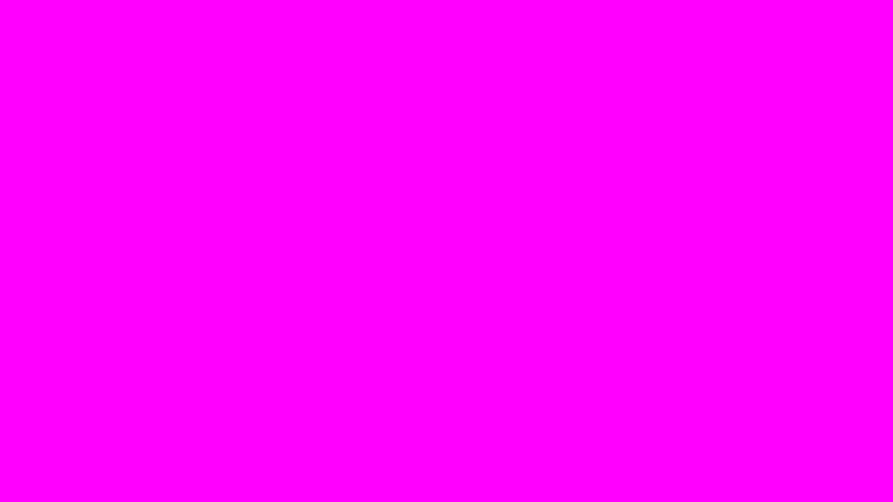
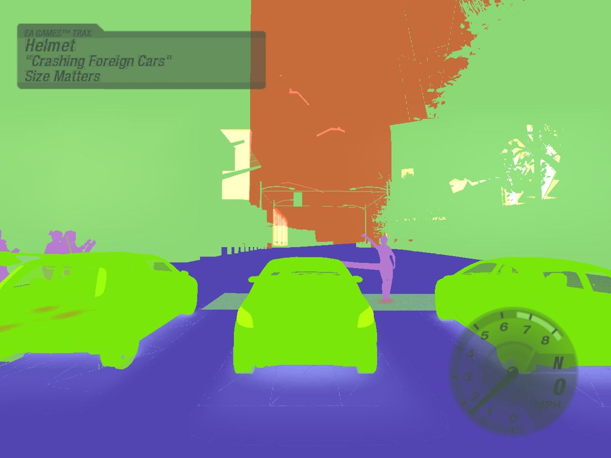
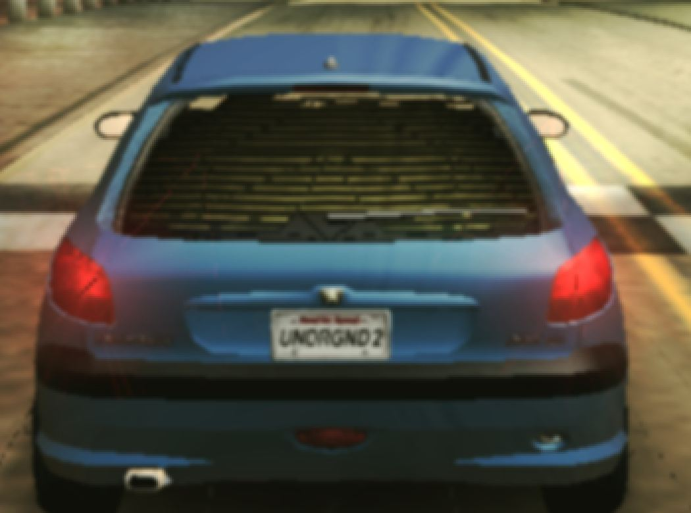
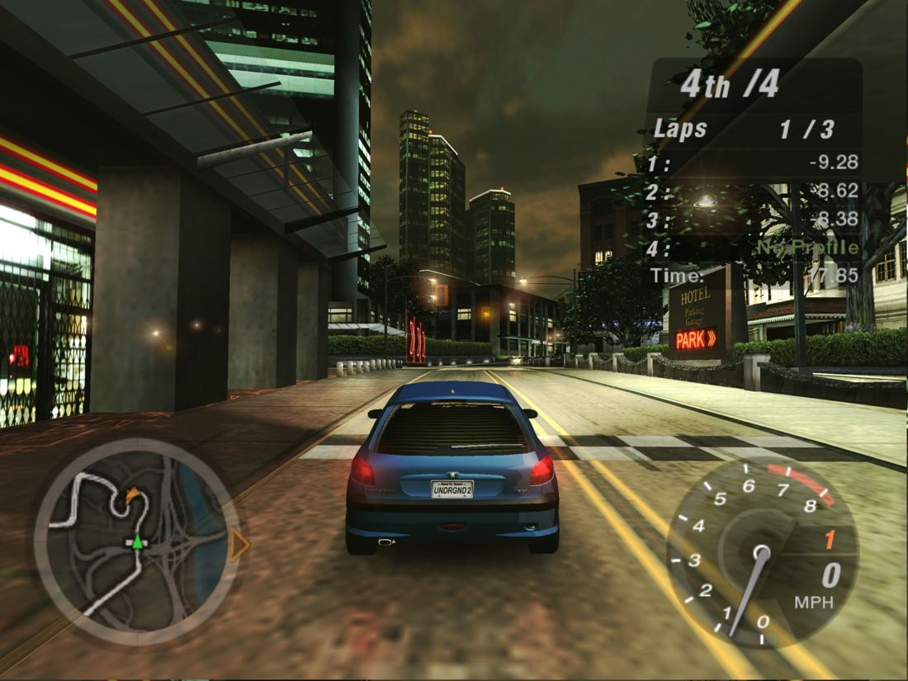
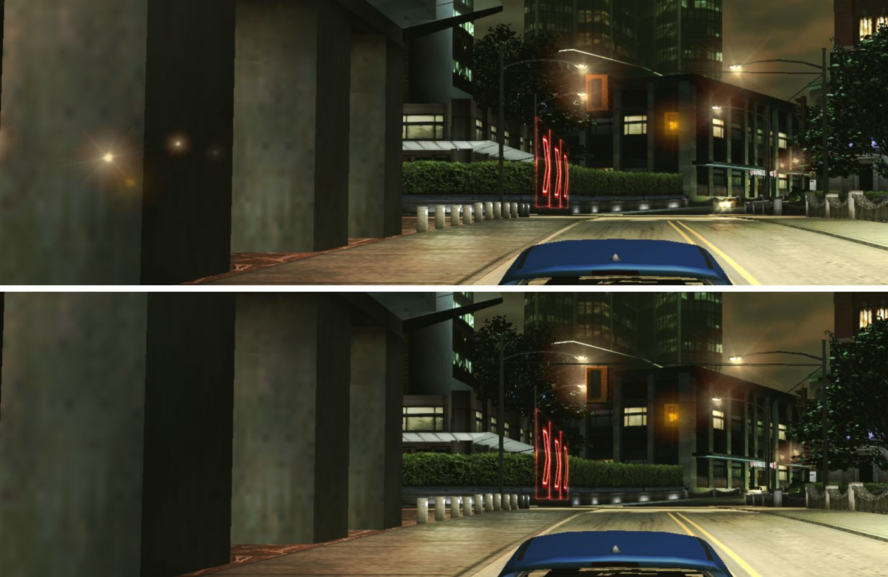

Başlangıç noktası
24 Ağustos 2026: elde yalnızca oyunun Windows dosyaları vardı.
Eldeki
SPEED2.EXE: 32-bit x86 Windows çalıştırılabiliri (3,68 MB kod bölümü, yaklaşık 1,13 milyon komut)- Oyunun veri dosyaları (1.261 dosya, eksiksiz)
- Kaynak kod yok. Oynanabilir bir tersine mühendislik (decompilation) projesi de yok; var olanlar yalnızca belgeleme düzeyinde.
Neden zor
- macOS, Catalina'dan (2019) beri 32-bit kodu hiç çalıştırmıyor. Rosetta 2 de yalnızca 64-bit x86'yı çeviriyor.
- Aspyr'ın 2005 tarihli resmî Mac sürümü PowerPC ve 32-bit Intel için yazılmış; bugünkü macOS'ta çalışmıyor.
- x86 komutları 1–15 bayt arası değişken uzunlukta. Bu yüzden koddaki bir 4 baytlık değerin adres mi sayı mı olduğu genel durumda kesin olarak bilinemez.
Yöntem
Oyunun kendi kodu yeniden yazılmıyor, makine tarafından çevriliyor. Elle yazılan tek şey, Windows'un yerini tutan sınır katmanı.
SPEED2.EXE
32-bit x86 makine kodu ve Windows içe aktarımları
Ayrıştırma ve çeviri
capstone ile komut çözme; relocation tablosu rehberliğinde fonksiyon bulma; her fonksiyonu C'ye çevirme
Yerel derleme
128 parça, tam derleme yaklaşık 5 dakika. Çıktı ARM64 Mach-O
Çalışma zamanı
Bellek, dolaylı çağrı tablosu ve Windows'un yerini tutan katmanlar
Yöntemi mümkün kılan bulgu: EXE'nin relocation (yer değiştirme) tablosu başlıkta silinmiş, ama verisi isimsiz bir bölümde fiziksel olarak duruyordu. Elle ayrıştırılınca 91.106 mutlak adres çıktı ve bunların %100'ü geçerli bir adrese işaret ediyordu. Bu tablo, x86 statik çevirisinin temel sorununu, yani "hangi 4 bayt işaretçi, hangisi sayı?" sorusunu çözdü. Kod bölümünün %96'sı kod olarak kesinleşti, belirsiz kalan kısım %1,3'e indi.
Bellek: oyunun 32-bit adres alanı tek bir bloğa eşleniyor. Konuk adresi ARM64'ün uxtw adresleme kipiyle tek komutta gerçek adrese dönüşüyor, yani her bellek erişimi ek maliyetsiz.
Tarih sırasıyla
Her gün için ne yapıldığı, ne fark edildiği ve kararın neye dayandığı.
-
1. gün
Fizibilite, yöntem seçimi ve ilk tam derleme
- KararWine ve sanal makine, "yerel olmalı" şartı nedeniyle elendi. Statik rekompilasyon seçildi.
- BulguSilinmiş sanılan relocation tablosu bulundu (91.106 adres, %100 geçerli).
- Çevirici ilk gün 23.274 fonksiyonun %96,3'ünü tam çevirdi. Tek bir eksik komut (
cld) tek başına 710 fonksiyonu tıkıyordu. - Dolaylı çağrılar için adres → fonksiyon tablosu kuruldu (sabit zamanlı arama). 23.278 fonksiyon 115,6 MB C koduna çevrildi ve 130 parçada hatasız derlendi. Windows başlangıç kodu 73 sistem çağrısı derinliğe kadar doğru çalıştı.
- BulguOyun "Buffer overrun detected!" hatası verdi. Sebep, çevirici hatalarıydı:
pushkomutunda değerlendirme sırası yanlıştı, fonksiyonların %25,2'si de yanlış bloktan başlıyordu. - OlumsuzFonksiyonların argüman sayısını koddan tahmin etmek, bilinen 183 fonksiyonda yalnızca %74,9 doğru çıktı. Yanlış bir sayı yığını bozduğu için bu yol bırakıldı, doğrulanmış bir tablo kullanıldı.
Neye göreHer aşamada kapsama ölçüldü: kod oranı, çevrilen fonksiyon, çözülemeyen çağrı sayısı. İlk birim testleri de oyunun kendi fonksiyonlarını C kütüphanesi karşılıklarıyla bit bit karşılaştırıyordu.
-
2. gün
Oyun kendi kodunu çalıştırıyor; işlemci çevirisi doğrulandı
- İlk kesintisiz koşu: 60 saniyede 373 kare, 69.540 çizim çağrısı, 64 veri dosyası, sıfır çökme. Windows katmanında dört kritik hata bulundu, örneğin iş parçacıklarının kendini yeniden başlatması ve TLS'nin iş parçacığına özel olmaması.
- İlk Metal penceresi açıldı. Dokular (DXT1/3/5) ve arayüz çizimi eklendi. Yükleme ekranı piksel piksel doğru çiziliyordu.
- BulguProfil ekranında gri çizgiler vardı: oyun shader'a matris yerine parametre adlarının harf kodlarını yazıyordu. İz, işlemci çevirisindeki hatalara kadar sürüldü.
- KararBelirti kovalamak yerine sistematik doğrulamaya geçildi. Mac'teki Rosetta'yı "doğru cevap" olarak kullanan bir diferansiyel test aracı yazıldı: aynı komut baytları hem gerçek x86'da hem bizim kodumuzda çalıştırılıp sonuçlar karşılaştırılıyor. Bu araç 15 gerçek hata buldu. Örnekler:
fistpyuvarlama kipi,adc/sbb, SSE'nin 128 bitin yalnızca 64'ünü işlemesi, yaklaşık 20 eksik komut. Sonuçta 13.000 rastgele vakada sıfır fark kaldı; bozuk matris sayısı 79.966'dan 0'a indi. - Gözlem"Oyunun akışı devam etmiyor, ilk sahnede kalıyor." Ölçümle doğrulandı: kilit fonksiyonları (EnterCriticalSection) hiçbir şey yapmıyordu, yükleyici, ses ve video iş parçacıkları hiç uyanmıyordu. Uyandırma sayıları 0'dan 145, 46, 34 ve 8'e çıktı.
- BulguOyunun ürettiği karelerin %86'sı ekrana ulaşmadan eziliyordu. Kare senkronu kurulunca oran 1:1 oldu.
Neye göreHata sayaçları (desteklenmeyen komut, çözülemeyen çağrı, bozuk matris), iş parçacığı uyandırma sayıları ve yakalanan ekran görüntüleri.
-
3. gün
Menü açıldı, ilk yarış oynandı
- Araçlar kuruldu:
- Oyunun ekranını PNG olarak kaydetmek; böylece her seferinde kullanıcıya "ne görüyorsun" diye sorma döngüsü bitti.
- Oyunun perakende sürümde susturulmuş kendi hata günlüğünü geri açmak.
- BulguMenüdeki uzun tıkanma tek satırlık bir hataydı: x87 yığınına kopyalama (
fld st(0)) yanlış yuvayı okuyordu. Windows'un kayan sayıyı tam sayıya çeviren rutini bu komutla başladığı için oyundaki her float → int dönüşümü bozuktu, oyunun zamanlayıcısı da donuyordu. Düzeltilince menü, animasyonlar ve girdi hep birlikte çalıştı. Kalan 722.451 bozuk matris de sıfırlandı. - İndeksli çizim yolu hiç yoktu: 1,58 milyon çağrı sessizce düşüyordu. O yol ve derinlik tamponu eklenince araba, showroom ve yarış göründü.
- BulguÖlçüm, vertex shader'ların işlemcide yorumlanmasının sürenin yaklaşık %45'ini aldığını gösterdi. Yorumlayıcı %40 hızlandırıldı ama yetmedi.
- Ses: CoreAudio çıkışı hiç yazılmamıştı, eklendi. Ardından dairesel tampon sarması ve yazma imleci hataları düzeltildi.
- Karar"Birebir görünüm" hedefi için oyunun kendi pixel shader'ları Metal Shading Language'e çevrilip GPU'da çalıştırılmaya başlandı. Genel amaçlı sabit bir shader yaklaşımı bırakıldı.
- GözlemYansımaların grafik ayarına bağlı olduğu, ayarı yükseltince de oyunun çöktüğü fark edildi. Bu gözlem üç eksiği ortaya çıkardı: cihaz sıfırlama (
Reset), yüzey tanımındaki alan kaymaları ve küp doku çağrıları.
Neye göreKapsama farkı (hangi fonksiyonlar hiç çalışmıyor), çağrı sayacı profili ve Windows'taki gerçek oyunun davranışı.
- Araçlar kuruldu:
-
4. gün
Shader'lar GPU'da; Windows referansıyla karşılaştırma
- Vertex shader'lar da Metal'e çevrildi. Çizim yolunun süresi 34,6 saniyeden 5,6 saniyeye indi (saniyede 2,4 milyon köşeden 92,4 milyon köşeye). Çevrilemeyen bir shader çıkarsa otomatik olarak işlemci yoluna düşüyor.
- BulguOyunun kayıt defteri yazımları atılıyordu. Kalıcı hale getirilince çökmeler kullanıcıyı beklemeden, pencere açmadan tekrar üretilebildi. İkili aramayla tek suçlu bulundu: araba yansıması ayarı. Küp doku metodunda her çağrıda 4 bayt yığın sızıntısı vardı; 6 yüz için bu 24 bayt kayma ve çökme demekti.
- GözlemWindows'ta alınan 400 MB'lık D3D9 çağrı izi (apitrace) sağlandı. macOS'ta hazır bir okuyucusu yoktu, kendi okuyucumuzu yazdık (38,3 milyon çağrı). İlk bulgu: çizimlerin %38'inde doku koordinatları yanlış kümeden okunuyordu.
- BulguKaranlık ve aşırı parlak görüntünün üç kök nedeni çıktı:
- Durum blokları boş nesneydi; her oturumda 1,16 milyon geri yükleme hiçbir şey yapmıyordu.
- 23 eski tip shader, parlaklık kaydırmaları uygulanmadığı için yarım parlaklıkta çıkıyordu.
- Bir karışım kipi eşlenmemişti ve sahne kendi üstüne ekleniyordu.
- Ses: tampon boyutu yanlış alandan okunuyordu, müzik hem hızlı hem kesikti. Menü müziği yarışta durmuyordu. Gecikme 0,55 saniyeden 0,27 saniyeye indi.
- BulguOyunun çözünürlük tablosu 6 satır ve hepsi 4:3. 7. satırı seçmek oyunun kendi dizisini taşırıyordu.
Neye göreWindows ekran görüntüleriyle aynı sahnelerin karşılaştırılması, apitrace izi ve tek bir geçişi atlayıp ya da renge boyayıp farkı ölçmek.
-
5. gün
Darboğaz ölçüldü, optimizasyon yönü belirlendi
- Yarış öncesi ara sahne 4,6 fps'ten 30 fps'e çıktı: sanal saatin kare içi tavanı yanlıştı.
- BulguMüzik yarışta yavaşlıyordu, çünkü oyun saati fps'e bağlıydı. Saat gerçek zamana bağlandı; oyun saatinin gerçek zamana oranı 0,885'ten 0,998'e çıktı.
- BulguKare bütçesi ölçüldü: GPU bütçenin yalnızca %20'sini kullanıyordu, bizim grafik katmanımız 1,8 ms'ydi, geri kalan yaklaşık %75 oyunun çevrilmiş x86 koduydu.
- KararOptimizasyon grafik tarafında değil, çevrilmiş kodda yapılacak.
- Tembel bayrak hesabı: x86'nın her aritmetik komutta hesapladığı altı durum bayrağından yalnızca sonradan okunanlar hesaplanıyor. -O3 derlemeyle birlikte yarış karesi 18,7 ms'den 15,7 ms'ye indi (%19).
- Bulgucapstone kütüphanesi x87 komutlarında FPU durum bitlerini aritmetik bayrak gibi bildiriyor. Bu hata ilk sürümü 12 saniyede çökertti; bulmak için bir denetim aracı (
flagaudit) yazıldı. - Yüz eleme hiç uygulanmıyordu; araba kapısında ve bina kenarlarındaki titremenin sebebi buydu. Kalabalık figürlerinde yanlış kemik seçimine yol açan
exppçevirisi de düzeltildi.
Neye göremacOS
sampleprofili, GPU meşguliyet sayacı, 439 komut testi ve her değişiklikten sonra A/B karşılaştırması. -
6.–9. gün
Görsel doğruluk, 1080p ve hız
- BulguEkranı kesen ince çizgiler, doku koordinatının seçildiği yerden geliyordu: pixel shader'da seçim yapmak GPU'nun türev hesabını bozuyordu. Seçim vertex tarafına taşındı.
- BulguSis hiç uygulanmıyordu; oyun sis ayarını 5,3 milyon kez kuruyordu. Gökyüzündeki mozaik ise ekrandan örnekleme yapılmasından geliyordu (Apple GPU'nun 32 piksellik karo sınırları). Gerçek kopyaya geçildi.
- 1080p ve geniş ekran: oran farkı Hor+ ile telafi ediliyor, görüntü gerilmiyor. Menüdeki son satır oyuna 1600x1200, kullanıcıya 1920x1080 olarak gösteriliyor; böylece oyunun tablosu taşmıyor.
- BulguKarenin %61'i gereksiz bir 60 Hz freninde uykuda geçiyordu. Önceki "optimizasyon işe yaramadı" sonuçlarının gerçek sebebi buydu. Fren kaldırıldı ve D3D çağrı dağıtımı (yarışta 377 milyon çağrı) isim karşılaştırmasından sayısal kimliğe geçirildi. Sonuç: 60,3 → 98,8 fps.
- KararÖlçüm yöntemi değiştirildi. Tek koşu karşılaştırması ±%7 gürültülüydü; kareleri gerçek zaman dilimlerine göre eşleştirince gürültü %0,1'e indi.
- OlumsuzÖlçülüp elenenler: profil güdümlü derleme (PGO, %0,9), bayrak analizini daha ileri götürmek (clang zaten yapıyordu) ve bir çökme sanılan durum (oyun hatası değil, kapanış sırasındaki bir yarış).
- Araba yansımaları: gerçek küp dokular eklendi. Eski shader'lar doku tipini bildirmediği için her shader'ın iki sürümü üretilip çizim anında seçiliyor. Maliyeti ölçülemeyecek kadar küçük.
Neye göreHough dönüşümüyle çizgi açısının ölçülmesi (37°, tam ekran köşegeni), mip kapatma deneyleri, eşleştirilmiş performans ölçümü.
-
paketleme
Çift tıklanan bir macOS uygulaması
./pack.sh→NFSU2.app. Başka makinede oyunu hiç açmayacak iki sessiz engel bulundu:- İkili, derleyen makinenin macOS sürümüyle damgalanıyordu.
-mcpu=nativeayarı yeni bir Mac'te derlenen ikiliyi M1'de çökertebilirdi.
- Oyun verisi paketin içine değil yanına konuyor: imzalı pakete yazılamıyor ve yazmak imzayı bozuyor. Gatekeeper için ad-hoc imza kullanıldı ve ölçüldü; notarizasyon olmadan geçmiyor.
-
değerlendirme
Hukuki çerçeve ve proje değerlendirmesi
- KararYalnızca dönüştürücü (çevirici ve çalışma zamanı) paylaşılacak. Oyun verisi ve EXE dağıtılmayacak; kullanıcı kendi kopyasını getirecek. Dayanak: birlikte çalışabilirlik amaçlı tersine mühendislik kararları (Sega v. Accolade 1992, Sony v. Connectix 2000). Bilinen riskler: kopya koruması atlatma (DMCA §1201), marka kullanımı, ekran görüntüleri.
- Benzer çalışmalar incelendi: N64Recomp (Zelda, Mario Kart 64…) ve XenonRecomp (Sonic Unleashed…). Hepsi konsoldan (MIPS, PowerPC) PC'ye çeviriyor. Bu projenin farkı: x86 PC'den ARM64'e ve Direct3D 9'dan Metal'e.
- Proje 12 ölçütle değerlendirildi. Özgünlük, zorluk ve ölçülebilirlik güçlü çıktı. Genellenebilirlik, literatür ve tekrarlanabilirlik zayıf çıktı (ayrıntı aşağıda).
-
netlik
Retina ekranda bulanıklık
- GözlemAynı sahnenin Windows ve macOS görüntüleri karşılaştırıldı; macOS görüntüsü bulanıktı.
- Bulgu1280x960'lık görüntü ekranda yaklaşık 1,91 kat büyütülüyordu. Oyun artık ekranın gerçek piksel sayısında (2448x1836) çiziyor. Kare süresi değişmedi (10,6 ms); GPU süresi 2,0 ms'den 4,9 ms'ye çıktı.
-
HLE
D3DX efekt kütüphanesini yüksek düzeyde ele almak (HLE)
- BulguOyun süresinin %47'si, oyuna gömülü Microsoft D3DX9 efekt kütüphanesinde geçiyordu. Kare başına 1.398 kez aynı durum yeniden hesaplanıyordu ve girdilerin %95,8'i değişmemişti.
- KararKütüphanenin davranışını üst düzeyde taklit etme işine başlandı (HLE). Her "bu adım atlanabilir" kararı, orijinali yeniden çalıştırıp bellek ve cihaz durumunu karşılaştıran bir doğrulama kipiyle kanıtlanıyor.
- Aşama 1, durum değerlerini hatırlama: oyun kodunun kare başına işlemci süresi 10,9–12,3 ms'den 8,1 ms'ye indi (%29); yarış 90 fps'ten 119 fps'e çıktı. 2,4 milyonu aşkın kontrolde 0 fark. Aşama 2, cihaz çağrılarını kaydetme: %5 daha kazanç; 3,5 milyon kontrolde 0 fark.
- OlumsuzAşama 3, bir geçişin tamamını atlama: doğrulama, isabetlerin %78'inin yanlış olduğunu gösterdi. Oyun dokuları her çizimde değiştiriyor ve bunlar parametre verisinden değil ayrı bir tablodan geliyor. Kod duruyor ama kapalı; olumsuz sonuç belgelendi.
Neye göreHer aşamanın doğrulama kipi ve 60 Hz'e sabitlenmiş ölçüm. 120 Hz ekran sınırında kare süresi, işlemci kazancını gizliyordu.
-
görsel
Duvar arkasından görünen ışıklar ve tam ekran
- GözlemBaşından beri şehir ışıkları ve bazı arabalar duvarın arkasından görünüyordu.
- BulguOyun görünürlük sorgusu hiç kullanmıyor; gizleme sıradan derinlik testiyle yapılıyor. Metal katmanında ise tek bir derinlik tamponu vardı ve hedef boyutu her değiştiğinde yeniden yaratılıyordu. Bir karede 320x240, 128x128 ve 640x480 hedefler arasında gidip gelindiği için ekrana her dönüşte derinlik bilgisi kayboluyordu. Çözüm D3D9'daki gibi: her derinlik yüzeyinin kendi dokusu var.
- Tam ekran: oyun ekranın gerçek pikselinde (3024x1898) ve geniş ekran olarak çiziliyor. Oyun sırasında geçiş, Windows'taki alt-tab yolunu taklit ediyor: cihaz "kayıp" bildiriliyor, oyun kendi grafiklerini yeni boyuta göre baştan kuruyor.
- Geliştirme sırasında alınan 192 ekran görüntüsü sohbet kayıtlarından kurtarıldı.
-
son durum
İmleç hizası ve 4K
- GözlemEkranda iki imleç vardı ve konumları farklıydı.
- BulguOyun imleç konumunu, katmanın bildirdiği sabit 1280x720 pencere boyutuna göre ölçekliyordu; 1280x960'ta dikeyde 1,33 kat kayma oluşuyordu. İmleç iki bilinen konuma zorlanarak ölçüldü ve düzeltildi. macOS imleci artık oyun alanında gizleniyor.
- 4K ölçüldü: 3840x2160'ta yarış 8,36 ms'den 8,82 ms'ye çıkıyor (yaklaşık 113 fps). Görüntü temiz.
Kararlar ve gerekçeleri
Projenin yönünü belirleyen seçimler, dayandıkları kanıt ve elenen seçenek.
| Karar | Gerekçe | Elenen |
|---|---|---|
| Statik rekompilasyon24 Ağu | "Arada katman olmasın" şartı. Relocation tablosunun bulunması yöntemi uygulanabilir kıldı. | Wine, sanal makine |
| Otomatik çeviri, davranışı koruyarak24 Ağu | 23 bin fonksiyonu elle yeniden yazmak yıllar alır; amaç kaynak kodu geri kazanmak değil, oyunun aynı davranmasını sağlamak. | Elle decompilation |
| Belirti yerine sistematik doğrulama25 Ağu | Bir belirti saatlerce kovalanmıştı. Gerçek işlemciye karşı test aracı tek günde 15 hata buldu. | Tahmin ve deneme |
| Shader'ları çevirip GPU'da çalıştırmak26–27 Ağu | İşlemcide yorumlama sürenin %45'iydi ve birebir görünüm hedefleniyordu. | Sabit shader, işlemci yorumlayıcısı |
| Windows'u referans almak27 Ağu | "Birebir" iddiasını ölçülebilir kılmak için aynı sahnelerin ekran görüntüleri ve API çağrı izi kullanıldı. | Göz kararı |
| Hızı çevrilmiş kodda aramak28 Ağu | Kare bütçesi: GPU %20, grafik katmanı 1,8 ms, kalanı x86 kodu. | Grafik optimizasyonu |
| 60 Hz frenini kaldırmak2 Eyl | Saat gerçek zamana bağlanınca gerekçesi kalmamıştı; karenin %61'i uykuydu. Oyun hızı değişmiyor (oran 0,999). | — |
| Geniş ekranı menü satırıyla vermek2 Eyl | Oyunun tablosu bellekte bulunamadı; 7. satır taşma yapıyor. | Tabloyu yamamak |
| Yalnızca dönüştürücüyü paylaşmak12 Eyl | Emsal mahkeme kararları var; hiçbir EA varlığı dağıtılmıyor. | Hazır .app dağıtmak |
| Doğrulamalı HLE; Aşama 3'ü bırakmak23–24 Eyl | Kütüphane sürenin %47'siydi. Aşama 3, doğrulamada %78 yanlış isabet verdi. | Doğrulamasız önbellek |
| Tam ekranı oyunun kendi sıfırlama yoluyla yapmak24 Eyl | Render hedefleri cihaz boyutuna bağlı; oyunun kendi Reset'i hepsini doğru kuruyor. | Dışarıdan yeniden boyutlamak |
Neye göre: doğrulama yöntemleri
Bir değişiklik ancak ölçüldükten sonra kabul edildi. Kullanılan araçlar:
Komut testleri
Elle kodlanmış x86 makine kodu ve Intel belgesinden türetilen beklenen sonuçlar. Her derlemede otomatik çalışıyor.
Gerçek işlemciye karşı test
Aynı komut baytları Rosetta üzerinde gerçek x86 olarak ve bizim çevirimizle çalıştırılıyor, sonuçlar karşılaştırılıyor.
Windows referans izi
Gerçek oyunun Windows'taki 38 milyon D3D9 çağrısı; "orada hangi durumla çiziliyor?" sorusunu tahmin etmeden cevaplıyor.
Kare ve geçiş yalıtımı
Kareyi PNG olarak kaydetme, çizimleri gruplayarak özetleme, tek bir shader geçişini atlama ya da renge boyama.
Profil ve çalışma raporu
Hiç çalışmayan fonksiyonlar, en çok süre alan kod ve "desteklenmeyen komut: 0, çözülemeyen çağrı: 0" gibi sayaçlar.
Kullanıcısız tekrar üretim
Menülerden yarışa aynı şekilde giren tuş dizisi ve kalıcı ayarlar. Hatalar pencere açmadan tekrar üretilebiliyor.
Eşleştirilmiş performans ölçümü
Tek koşu ±%7 gürültülüydü. Kareleri aynı oyun anına eşleştirince tekrar farkı %0,1'e indi.
HLE doğrulama kipi
Atlanan her adım için orijinal yeniden çalıştırılıp bellek ve cihaz durumu karşılaştırılıyor; milyonlarca kontrolde sıfır fark.
Performans
Yarışta kare hızı, dönüm noktaları. Değerler farklı günlerde ölçüldü; eğilimi gösteriyor, birebir karşılaştırma değil.
Kare süresi nereye gidiyor (28 Ağustos ölçümü):
Bu ölçüm, optimizasyonun grafik tarafında değil çevrilmiş kodda yapılması gerektiğini gösterdi. Sonraki kazançların hepsi oradan geldi: tembel bayrak hesabı, sayısal çağrı dağıtımı ve D3DX HLE. Bugün yarış, M1 Pro'da ekranın 120 Hz sınırına dayanıyor. 60 Hz'e sabitlenmiş ölçümde oyun kodu kare başına 7,5 ms işlemci harcıyor; D3DX çalışmasından önce bu değer 10,9–12,3 ms'ydi. Çözünürlük hızı pek etkilemiyor: 1280x960 ile 2448x1836 aynı hızda, 4K'da kare süresi %5 artıyor.
Görseller
Geliştirme sırasında alınan karelerden seçmeler. 192 görüntünün tamamı proje klasöründe sunum_ss/ altında.










Açık konular ve sınırlamalar
Bilinen eksikler. Bunları saklamak yerine belgelemek tercih edildi.
Oyun içinde
- Giriş videoları (VP6 formatı) atlanıyor; kod çözücü yok. Not: arşivdeki Windows kopyasında da ilk videolar oynamıyor.
- Referans olmadan karar verilemeyen dört görsel madde var: HUD satır dikişleri, kalabalık figürleri, TRAX ekranındaki hayalet dikdörtgen ve ışık çizgisi kaplamaları. Bunlar için nesnel bir ölçüm yok; aynı sahnenin Windows görüntüsü gerekiyor.
- Ses gecikmesi yaklaşık 0,27 saniye. Bunun 0,26 saniyesi oyunun kendi tampon davranışından geliyor, Windows'ta da aynı.
Proje olarak
- Yalnızca tek bir oyunda (tek bir EXE sürümü) doğrulandı; genellenebilirlik henüz gösterilmedi.
- Proje klasörü bir git deposu değil. Geçmiş,
PROJECT.md(1.309 satır),D3DX_HLE.mdve 44 not dosyasında tutuldu. - Yalnızca M1 Pro ve macOS 26'da ölçüldü. Uygulama macOS 11 tabanıyla derlendi ama eski sistemde denenmedi. Notarizasyon olmadığı için Gatekeeper uyarısı veriyor.
Tez için sonraki adımlar
12 Eylül'deki değerlendirmeden çıkan öneriler. Önümüzdeki dönemde ek özellik, hata düzeltme ve yazım için plan.
Araştırma tarafı
- Katkıyı netleştirmek: "Statik rekompilasyon ve shader çevirisiyle x86 masaüstü oyunu ARM64'te yerel hıza yakın çalıştırılabilir" iddiasının ampirik kanıtı; x86 ve D3D9'un hangi davranışlarının statik çeviriye en çok direndiğinin sınıflandırılması.
- Literatür: ikili çeviri (static/dynamic binary translation), API çevirisi (DXVK benzeri) ve Rosetta 2 ile karşılaştırma.
- Genellenebilirlik: ikinci, farklı bir Direct3D 9 oyununda kısmi doğrulama. "Tek oyuna özel" eleştirisine en güçlü cevap bu.
Süreç tarafı
- Git ile sürüm geçmişi tutmaya başlamak (tekrarlanabilirlik).
- Hukuki ve etik bölüm: yalnızca dönüştürücüyü paylaşma, emsal kararlar, marka ve DRM notları.
- Çalışma biçimi beyanı: geliştirme, proje sahibinin yönlendirmesiyle bir yapay zekâ kodlama asistanı (Claude Code) kullanılarak yürütüldü. Hedef ve kısıtlar, öncelikler, oyunu oynayarak yapılan gözlemler, Windows referansları (ekran görüntüleri, apitrace izi) ve D3DX HLE gibi yön kararları proje sahibinden geldi; uygulama, ölçüm ve hata ayıklama asistanla birlikte yapıldı. Bölümün yapay zekâ kullanım politikası danışmanla netleştirilmeli.
Kaynaklar: altı geliştirme oturumunun kayıtları (24 Ağustos – 27 Eylül 2026), PROJECT.md, D3DX_HLE.md, proje not dosyaları ve 192 ekran görüntüsü. Tüm sayılar o oturumlarda yapılan ölçümlerden alındı.